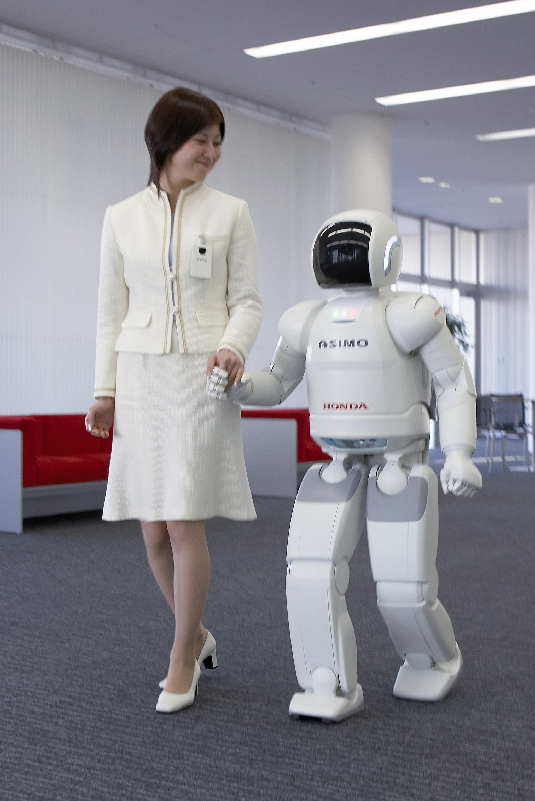
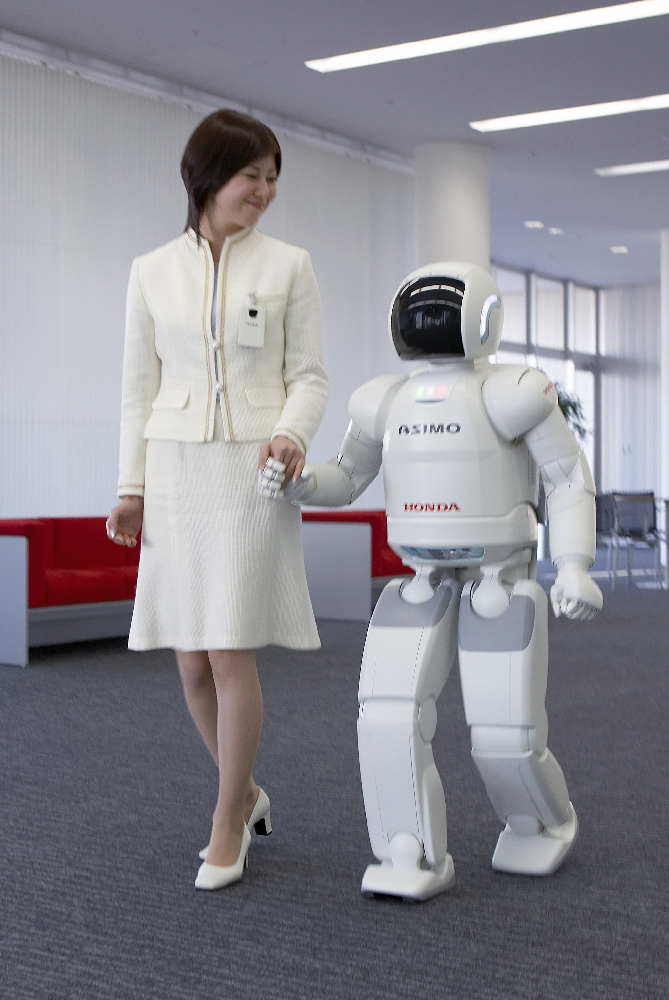

ASIMO
| 2000 | 2001 | 2002 | 2003 | 2004 | 2005 | 2007 | 2011 |
|---|
2005 (Software Update)

On December 13th, 2005, Honda unveiled a refining update to ASIMO 2004's capabilities. During the announcement, Honda also told the media that the technologies they are developing for ASIMO were planned to trickle down into their consumer products, such as using ASIMO's collision prediction and avoidance for improving the safety of their cars.
Software

Using proactive posture control while both feet are off the ground while running has increased running speed to 6 km/h. ASIMO is now airborne for 0.08 seconds and travels 50 mm, the stride has also lengthened to 525 mm.
By shifting the center of gravity to the left or right while running, ASIMO is now able to corner while running at 5 km/h, and a radius of 2.5 m.
Also, walking speed has also improved to 2.7 km/h. While walking, the battery durration is 40 minutes. Along with improving forward movement, inplace movement improved as well. It is now possible to turn in place. In general, ASIMO is now a lot more dynamic, physically.

ASIMO can now receive and carry trays that are up to 1 kg while walking up to 1.6 km/h. It can also handle reception and delivery services, and act as an informantion guide.

It can also push a cart with a maximum load of 10 kg. Adjusting individual arm force using its wrist sensors, it keeps an appropriate distance from the kart while maintaining control. If the cart is pushed by external forces, ASIMO will recover and continue. While pushing, it predicts 3 steps ahead and can move outside of the path immediately behind the cart to make turns with a smaller radius.
 

People registered in ASIMO's identity databank can wear a IC Tele-interaction Communication Card that will notify ASIMO when you are nearby. When a person wearing this card comes within a 4 meter radius of ASIMO, it detects that they are in range using radio communication. Then using infrared communication, the approximate direction is determined. Then, ASIMO turns towards the approximate direction to then identify the person's face by using it's head cameras, and match it in it's database.
Lastly, ASIMO can now hold hands while walking with a person, and can be used to lead someone to a desired location. It will adjust its speed to sync with the person its walking with.
Appearances
August 29, 2007 - "Say 'Hello' to Honda's ASIMO" at Disneyland Innoventions[a1]